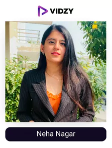
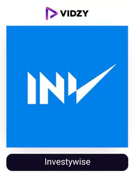

The blog lists the best Indian finance Influencers and the impact that they are creating in the Global landscape. It also answers how they function and their contributions.
The global landscape is the result of relentless efforts of billions of people from the past and the present. Their efforts are the primary reason that we all are enjoying the contemporary scenario. There are more than 200 nations but not all nations enjoy equal footing in a global equitable platform. What is the core reason for this stark contrast?
Finance. Finance is the fuel which runs global economies. Not only global, but finance also so intricately weaves our life that our most decisions rests on the question, how much financially sound we are?
Finance is a vast topic. Learning it from the textbook is just mundane and monotonous. For most it is just a waste of precious time. Now hold it here as let’s see another perspective.
Financial education and economics are related but completely different from one another. Where economics teaches us about the function of an economy, instruments used, strategies and history of economies, etc., It does not teach us sound decisions or any executive actions. Financial education teaches us about various probable successful decisions based on economics knowledge. Financial education is more holistic compared to economics.
To make right decisions is the mere factor that distinguishes person to person standing in finance platforms.
Contents
- 1 So, Who are Finance Influencers?
- 2 List of Top 20 Finance Influencers in India
- 2.1 Sharan Hegde
- 2.2 Ankur Warikoo
- 2.3 Neha Nagar
- 2.4 Raj Shamani
- 2.5 Rachana Phadke Ranade
- 2.6 Stock Market India
- 2.7 Shreya Kapoor
- 2.8 Anushka Rathod
- 2.9 Investywise
- 2.10 Pranjal Kamra
- 2.11 Mehar
- 2.12 Reshi Magada
- 2.13 Startup Pedia
- 2.14 Dhruv Tuli
- 2.15 Hardik Bhatia
- 2.16 Harshvardhan
- 2.17 Nikhil Kamath
- 2.18 Money Way
- 2.19 Abhishek Kar
- 2.20 Caslynn Qusay Naha
- 3 To Sum Up
So, Who are Finance Influencers?
The recent trend of cross channels functioning on various social media platforms has given voice to many key onion leaders in the finance world. They are collectively known as Finance Instagrammers. Finance influencers create finance related videos such as Stocks trading, Finance statements – Balance sheets, ITRs, P&L statements, How to make money, How to save money, How to invest etc. They also help right finance brands in promoting their products.
Finances Influencers understands the monotony and mundaneness of textbook experience and venture out to produce videos, reels, etc on social media platforms, which offer higher audience penetration and capability for mass teaching and creating mass awareness.
Indian Finance instagrammers also support Indian and global brands to root into untapped potentials and create visibility among masses.
According to one of the top financial institution research survey conducted among 1000 people, more than 79% of respondents informed that they used inputs from finance influencers in asset securing decisions.
The top finance influencers in India majorly leverage the benefits of videos to relay their content among the masses. Videos provide a much interactive platform for audiences to engage.
However, if you are a financial brand, collaborating with them has never been easier as well, all thanks to Vidzy the best video production company which has bought a total revolution in the world as they handle the whole process of video content creation (which is extremely important for you to indulge in as according to Cisco, online videos will account for over 82% of all consumer internet traffic by the end of 2024) right from choosing the influencers to scripting to shooting in a professional studio to monitoring the campaigns and deliver them within 48 hours. We make finance influencers based video Ads, social media organic videos, product demos, website videos that brands can utilize.
Now, let us look at the top finance instagrammers in India whom you can follow to become financially literate and collaborate with.
List of Top 20 Finance Influencers in India
-
Instagram: financewithsharan
USP:
He makes finance concepts easy for you to understand.
Sharan Hegde is a financial speaker, influencer, management advisor, and content producer. He is renowned for giving millions of people on social media platforms investing insights. The influencer has been highlighted on the pages of news organizations like the Times of India, Mint, and the News Minute. During his visit to ETnow, Sharan emphasized the value of teaching Gen-Z about money management.
Because he uses Instagram filters and numerous accessories to share financial ideas hilariously, Sharan is well-known. To keep his audience interested, he references his personal experiences, films, and famous sitcoms. Tax, insurance, home loans, credit cards, cryptocurrencies, NFT, mutual funds, real estate, and the stock market are some of the subjects Sharan discusses. Additionally, he offers advice on prudent saving and investments. Make sure you follow one of the top finance Instagrammers in India!
-
Ankur Warikoo
Instagram: ankurwarikoo
USP:
He has a way of making you explain concepts with everyday example.
Ankur Warikoo is an entrepreneur, finance influencer, Indian author, speaker/ educator, and content developer. One of the Influencers’ areas of expertise is advising followers on how to spend their time, energy, and money wisely. Ankur encourages his listeners to be successful in their daily lives. They gradually become more solid financially because of this. Time management, money management, business start-ups, talent and skills, good habits, failures, friendship, and stability are just a few of the subjects Ankur tackles.
The majority of his content is devoted to growth hacks, lessons from life, books, advice for personal development, inspirational quotes, tricks for increasing productivity, financial dos and don’ts, crucial skills, etc. Ankur posts four new pieces of material per day, preferably at eight in the morning.
As per Forbes, social commerce is a 1.2 trillion-dollar opportunity and a shopping revolution (just like Vidzy), so if you as a brand want to make the most out of it as well, make sure you collaborate with this ideal influencer through the top video agency – Vidzy.
-

Neha Nagar
Instagram: iamnehanagar
USP:
She comes up with different concepts to explain essential finance concepts.
Neha Nagar is a wealth manager, financial counsellor, one of the best finance influencers India and the creator of taxation help.in, a company that assists entrepreneurs with their financial requirements. She is one of the few women that produces content for her audience that is financial in nature. Neha spoke about cryptocurrencies on NewsX. She was highlighted on FEMINA for her writing on taxes and finance.
The influencer was profiled by CNBC in 2021 for her opinion on stock market reversals and when to buy shares. Neha also speaks at TEDx events. At TEDxKIET, she delivered a speech on “Rise in the era of Fintech” to a thunderous ovation from the audience. Neha spoke as a guest speaker at the UNICEF India-sponsored event “STEM and Financial Literacy for Young Women.”
-
Raj Shamani
Instagram: rajshamani
USP:
His experience and amazing communication skills helps him make a positive impact on the life of his audience.
Shamani is a talented young business expert who has experience in almost every industry thanks to his speaking engagements and one-on-one interactions. His experience dealing with second-generation business owners who co-own their companies with their families has given him a wealth of expertise. Shamani firmly believes that large organizations should adopt a family business mentality. Shamani, one of the best financial speakers, has spoken at Tedx three times. He oversaw delivering 100 keynote speeches at the age of 21 in 23 different nations. Shamani was chosen to represent the United Nations because she frequently speaks and presents. One of the youngest Indian delegates to ever speak before the UN in Vienna is him.
He is also a well-known Instagram user who frequently uploads content about money or ways to improve your financial literacy. He has a 2.78 percent engagement rate and more than a million followers. Since most of his reels easily surpass the million-dollar barrier, you must have noticed him in the trending reels area. This is the account to choose if you want to learn finance effectively and simply as he is one of the finest stock market influencers Instagram India
-
Rachana Phadke Ranade
Instagram: ca_rachanaranade
USP:
She is extremely experienced and covers all the essential finance topics under roof.
Rachna Padhakar Ranade is an entrepreneur, chartered accountant, teacher, YouTuber, investor, and venture capitalist Rachna Padhakar Ranade. The Indian finance influencer is renowned for producing material on a variety of topics, including business models, investment methods, and stock markets. Rachana produces material for Instagram that instructs her followers on how to calculate their taxes and capital gains, how to pick loans, how mutual funds operate, the fundamentals of finance, the facts about life insurance, how to invest in unlisted stocks, technical analysis, etc.
To provide her listeners with better insights, she examines businesses. Better investing choices are made because of the knowledge gained. Rachana manages a financially smart Instagram account with a 1.28% engagement rate. She posts fresh content every alternate day making an impact on her audience and generating authority.
-
Stock Market India
Instagram: thestockmarketindia
USP:
One place destination to know about finance in-depth.
You need to know how to handle your money if you want to be financially literate. Understanding how to pay your bills, borrow money responsibly, save money, invest, and plan for retirement are all necessary for this. By taking the initiative to educate yourself and increase your financial literacy, you can start with the foundations of money management and work your way up to becoming a savvy spender. Making time for your financial development will improve your decision-making around savings and investments. Utilizing criteria like age, talent, wealth, and the ability to develop healthy habits, you can build a long-term nest fund.
And following the proper account, with the stock market India being one of them, might help you in this endeavour. If you want to keep up with everything pertaining to the Indian stock market, you should follow this Instagram account that is specifically dedicated to the stock market. It has a team devoted to research that offers helpful data and recommendations. Additionally, it offers daily assessments of the Nifty and Indian Stock Market. It has 781k followers and a 0.65% engagement rate. Make sure you follow one of the top stock market influencers Instagram India.
-
Shreya Kapoor
Instagram: shreyaakapoor_
USP:
One of the most creative finance influencers when it comes to explaining financial concepts.
Shreya Kapoor, a finance major, has experience as a consultant with Bain & Company. About a year ago, she decided to leave her full-time job to focus on her goal of using Instagram videos to simplify all things financial. Making sensible financial decisions, investing, trading stocks, etc. are stressed in her videos. She recently achieved the 600K follower mark on Instagram.
All her reels easily cross 500K views and are appearing in the trending section. Due to her connection with the audience and inventive manner of integrating the sponsors, many financial-related brands are approaching her. If you’re looking for a quick way to become financially educated. She is among the top Instagram accounts to follow if you are interested in finances.
-
Anushka Rathod
Instagram: anushkarathod98
USP:
She boasts a great engagement rate owing to a plethora of content uploaded every day.
Anushka Rathore is one of the most well-known finance influencer on Instagram and content producer from Gujarat, India. By continuously posting articles about business stories, personal finance, economics, cryptocurrency, NFT, travel hacks, etc., Anushka has amassed a considerable following. She has worked along with a few of the Influencers on our list to offer a 360-degree perspective on difficult financial issues.
Want to know more about insurance, mutual funds, or wise investments? Then Anushka is your guide, so stop searching. She also offers financial advice that a user might not often know. Anushka’s engagement rate, which she consistently achieves with 438K views, 32K likes, and 105 comments, is a comfortable 7.65%.
-

Investywise
Instagram: investywise
USP:
Share market insights and infographics.
People who have a firm understanding of financial concepts can better understand and navigate the financial environment, as well as manage financial risks and prevent financial blunders. You can live a stress-free life by improving your finances, achieving your goals, protecting yourself in case of an emergency, securing the future of your family, and creating retirement plans with the help of financial literacy. It’s challenging to regularly make the right decisions on significant purchases and investments while keeping track of money coming in and going out, due dates, finance charges and fees associated with invoices and bills, and other factors. You would think that given the stakes involved, this ability would be taught in high school (or even earlier), yet it isn’t.
It’s amazing how Investywise conveys the information to you in the form of a meme. They divulge the holdings of major investors, which may enable you to grow your holdings and gain an understanding of the market environment. Additionally, they include quotes from important investors in the company to spark your interest and persuade you to take a chance on the stock market. Follow one of the best finance influencers on Instagram right away!
-
Pranjal Kamra
Instagram: pranjalkamra
USP:
One of the most intelligent finance influencers who knows what to put out at which period.
Pranjal Kamra is an Indian financial advisor and investing guru who also founded Finology Ventures Private Limited and is a best-selling author, content developer, and investor. Business Today, Times of India, Moneycontrol, ETNow, CNBC TV18, India Today, The Economic Times, Financial Express, and Your Story are just a few of the publications the business has worked with.
Pranjal was on the Business Today cover for August along with Ankur Warikoo and Rachana Phadke. Pranjali discusses topics like initial public offerings (IPOs), insurance planning, taxes, stocks, debit cards, market analysis, future and options, financial planning, mutual fund analysis, entrepreneurship, books, cryptocurrencies, startups, business analysis, companies, assets, and wise investments on Instagram. Pranjal has a sizable 501K following thanks to his commitment to his profession.
-
Mehar
Instagram: msbvision
USP:
She will help you get your dream job and handle your finances better.
We all become hyperaware, anxious, and terrified when it comes to impressing an interviewer in terms of a career, especially when it involves your dream job. Every word you utter has an effect, and sometimes we slip up and say the wrong thing! To ace your job interview, it’s crucial to exude confidence, expertise, and tools. To ensure everything goes smoothly, all you need is a helping hand from people who can help you with the finer parts of interview preparation.
And Mehar, one of the best Indian finance influencers, can be the ideal helping hand for you. Her profile is full of posts, videos, and reels that have received millions of views or many reels that have surpassed the million marks as she instructs you on how to handle various situations when trying to land a job. She helped thousands of people land their dream jobs, and her fans are grateful for her in her comments area as well. Make sure you follow one of the top female finance influencers India.
-
Reshi Magada
Instagram: reshionbusiness
USP:
He has amazingly valuable content for everyone.
No matter where you are in your financial journey, this account may be of assistance to you. Organizing your funds comes first, then investing, and then scripts for tackling difficult financial conversations! The third is vital, but the first two are crucial. Even if you take all the necessary steps to build the ideal financial life for yourself, the foundation will be shaky if you are unable to set boundaries and conduct productive, healthy money conversations with the people in your life. Since, let’s face it, others like to spend your money! often in less obvious ways. We will gradually lose access to our money owing to societal obligations, family pressure, and job politics unless we learn to speak up for ourselves when we are still impressionable and passionate.
Reshi Magada can be your ideal aid in controlling your financial situation with his material; he has a following of 382K and an engagement rate of 13% that has propelled most of his reels into the million-dollar club. Make sure you follow one of the top female finance influencers India.
-
Startup Pedia
Instagram: startup.pedia
USP:
They will provide you all you need to start something of your own.
Innovation is what drives economies. An entrepreneurial attitude has the power to transform the globe and broaden communities. People who share the same traits and abilities as successful entrepreneurs and change-makers get inspiration from the stories of these individuals. According to Start-up Pedia, “every story matter” since it might support the realization of an entrepreneurial dream.
This is the rationale behind why you should keep yourself informed about the experiences of people who have succeeded in creating resilient communities and catalysing changes in the sector. They will aid you in avoiding the errors that could prohibit your company from becoming successfully created. With 390k followers and 3329 posts, Startup Pedia is clearly one of the most followed finance Instagram influencers in India.
-
Dhruv Tuli
Instagram: investmentorstocks
USP:
He will make you a pro at the stock market in turn helping you make a lot of money.
The largest stock trading community in India, Investmentor Stocks, was founded by Dhruv Tuli, who also serves as CEO and primary trainer. He could be considered a modern-day financial guru. His business has a very high success rate. Worldwide, IM Stocks has 5000+ active clients and 276K followers! Dhruv has significant notoriety from being included in prestigious publications like Hindustan Times, Business Standard, Medium, and more to show his reliability as a financial advisor. He has also been asked to speak in front of the public at a number of events about stock markets, investing, entrepreneurship, startups, and technology. At the age of 17, Dhruv defeated more than 1000 competitors to win a National Level Stock Market competition.
He began his financial career at an early age and quickly learned that it is difficult to regularly make money. Like many novices, he made a tonne of blunders that ultimately served as a valuable source of information for him to develop into a great trader. He needed three years to eventually achieve expert status. At IM Stocks, he has successfully mentored more than 2000 students who have been able to realize their dreams. They often profit from the Stock Market thanks to the helpful lessons taught during the training phase. It makes sense to follow the financially knowledgeable Instagram account as IM Stocks has made a name for itself in the market.
-
Hardik Bhatia
Instagram: hardikbhatia.in
USP:
He will make you smarter with your decisions in finance.
The days of securing one’s future only through savings are long gone. Savings may not be sufficient in today’s environment to guarantee financial security. It’s also possible that the money you have in your savings account or locker is useless. This is so for two reasons: first, since it cannot be used to create more money, idle cash in your bank account represents an opportunity cost; second, it has little possibility of outpacing inflation. The truth stated above makes it clear that simply making money and keeping it inert is insufficient. It would be advantageous to put your money to work for you. What steps do you take to do that? The secret is to INVEST.
That’s where Hardik steps in with his unique content to help you understand all about investing. His methods are so easy to understand and creative that he has developed an authority in the niche in no time making him one of the finest or top financial influencers on Instagram. Make sure you follow him!
-
Harshvardhan
Instagram: trade_with_trend
USP:
He can help you put your money in the right place by teaching you about finance.
Harshvardhan The founder of Trade with Trend is a trading trainer that is passionate about the financial markets and wants to develop his audience into incredible traders. Many finance aficionados enrol in the swing trading courses developed by the Indian financial influencer. We have heard from people who say that using Harshvardhan’s strategies has helped them achieve success.
Trade With Trends has 177K followers on Instagram. Market insights, the top stock options, business news, industry updates, brand IPOs, inspirational quotations, start-up news, etc. are all continuously updated on Harshvardhan’s feed. His post on India’s industry leaders received overwhelmingly favourable feedback from his followers. Make sure you check out its content!
-
Nikhil Kamath
Instagram: nikhilkamathcio
USP:
One of the Youngest billionaires in finance who frequently shares advice that can be really helpful for you.
One of India’s newest billionaires, Nikhil Kamath is also a co-founder of Zerodha, the largest trading brokerage and turebeacon in the nation. The fact that Mr. Kamath started trading after quitting school at the age of 17 is unknown to many people. He and a friend founded their first business, buying and selling used phones, when they were just 14 years old. But the business was immediately shut down when his mother found out about it. She believed I dropped out of school to launch a phone business and dumped the phones down the toilet, he exclaimed. He has certainly gone a long way.
It’s true that information, not age, is what makes you smarter, therefore let’s suppose that he knows a lot about business from his experience. Who among us wouldn’t want to learn from a billionaire? Through his financially smart Instagram account, he achieves just that. You must follow the industry’s leaders if you have any interest in finance at all. He has a following of 268k people and a 10% engagement rate. Many of his reels have millions of views as a result of the idolization he receives from his fanbase. Make sure you follow one of the top financial influencers on Instagram.
-
Money Way
Instagram: __moneyway__
USP:
A free education page for all things finance.
MoneyWay is a media and journalism organization that offers free stock market education to its viewers. Want to learn how to perform fundamental and technical analysis or how to read candlestick charts? If so, you’ve found the proper site. On Instagram, MoneyWay has 148K followers.
Topics including the LIC IPO, holdings, future investments, dividends, global expenditure, banking, real estate, stock investments, candlestick patterns, and entrepreneurship are covered by the content authors. Additionally, they present contrasts between two or more businesses, entrepreneurs, or industry sectors. The content on the page is clearly sorted for viewing convenience. The creators use examples from actual financial situations to illustrate their points making them one of the top stock market instagram influencers India.
-
Abhishek Kar
Instagram: abhishekkarofficial
USP:
He will provide you information that won’t let you make financially weak decisions in the future.
Abhishek Kar is a Social media influencer, trader, investor, and business owner. He has extensive knowledge of the stock market. He has delivered the keynote address at several academic gatherings and has spoken at TEDx. He is well-known on social media for the videos he posts in which he tries to inform viewers about derivatives, scams, and stock markets. He also helps newcomers learn different financial concepts like fundamental analysis, options trading, futures trading, technical analysis, and even live trading. He has extensive knowledge of the stock market. He earned more than 99 awards at Mahatma Mandir Gandhinagar, including the Young Leadership Award from the JSK group and the Youth Inspiration Award from the Poornwadi group.
His success was also highlighted in business publications and other Indian media outlets. He routinely educates his followers about various trading and money-making strategies on his finance Instagram account. He has 124K followers and a 3.18% interaction rate; his reels and instructions are well-liked by his audience and frequently reach the 100K mark. This account might serve as your beginning point to becoming wealthy or financially secure if you are interested in developing your financial literacy.
-
Caslynn Qusay Naha
Instagram: sasswcass
USP:
She will take you all the financial topics one reel at a time.
These days, it is more and more important to understand your finances. Understanding financial concepts and principles including budgeting, compound interest, debt management, successful investment strategies, and money-time value are necessary for financial literacy. Poor financial decisions brought on by financial illiteracy may be harmful to one’s financial stability. Developing financial literacy involves many steps, including mastering budgeting, cost management, understanding debt repayment strategies, and correctly planning for retirement. One illustration of such a measure is financial specialist counselling. Financial education includes learning how money works as well as defining and achieving financial goals and overcoming personal and external financial challenges.
So how can we acquire it in the finest way? Through accounts like this one on Instagram for money, let’s respond to that. She makes sure to publish amusing and thought-provoking articles, videos, collaborations, and partnerships to support you on your financial path. She has 122k followers and a 5.33% interaction rate. Her reels frequently receive over 100k views because of her excellent ability to convey various ideas. This is one of the top stock market Instagram influencers India is excellent for you if you wish to get control over your finances.
To Sum Up
Daily life requires a certain level of financial knowledge, but finding trustworthy sources of information is quite difficult!
A huge audience and brands are looking for these finance influencers due to the booming economy and current financial wokeness. To immediately be financially savvy, make sure you don’t miss out on this opportunity as well and follow them!
We hope you found this useful. Feel free to share!